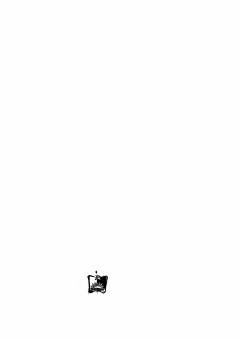

YDJanubiy Amerika o'rmonlarida qadimiy dunyoni kashf etgan ekspeditsiya haqidagi ilmiy-fantastik sarguzasht asari.
Mashhur ingliz yozuvchisi Artur Konan Doylning ushbu ilmiy-fantastik asari Janubiy Amerika o'rmonlarida yo'qolib ketgan qadimiy hayvonlar va odamsimon maymunlar dunyosini kashf etgan ekspeditsiya haqida hikoya qiladi. Asar qahramonlarning xavfli sarguzashtlari va fanni boyitgan kashfiyotlari orqali inson matonatini tarannum etadi.